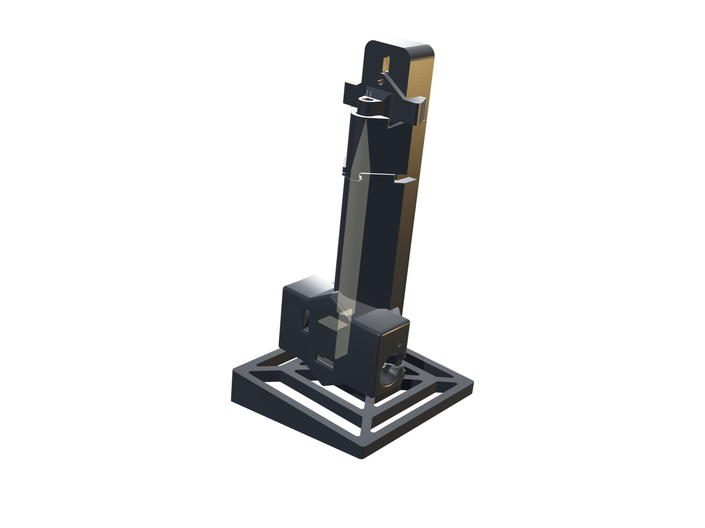
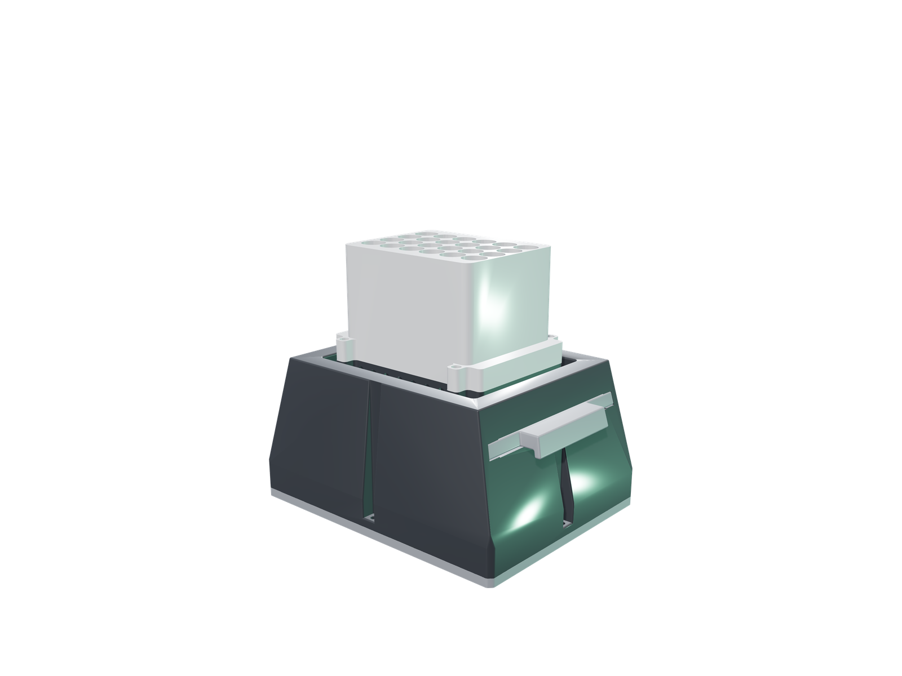
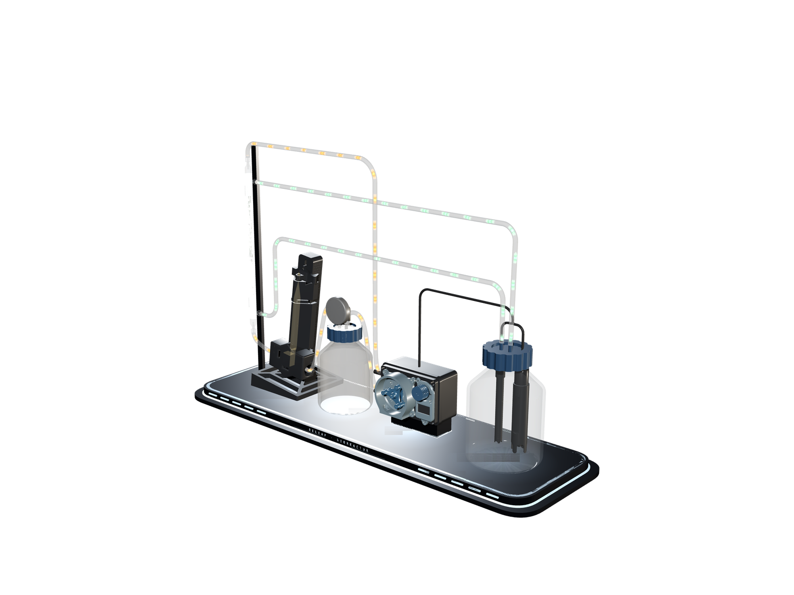

Three instruments,
one question
RELEAF makes plant protectants on demand, in the field, from engineered Bacillus subtilis. To do that we had to know two things continuously: how much culture is there, and how does light drive it. Nothing affordable answered either, so we built the answers.
- Instruments
- 3
- Printed parts
- 14
- Longest run
- 400h
- Open source
- All

V4 Photometer
Reads OD600 straight from the culture as it flows, through a 0.2 mm path, without ever removing a sample. A beam split two ways cancels LED drift, so it can run for weeks unattended.
- 400 h continuous
- 8% vs a lab Bio-Drop
- 15 components

DiOPAL
Green light switches protectant production on, red switches it off. DiOPAL holds twenty-four cultures under six defined light conditions at once, so a single run answers how wavelength and intensity drive expression.
- 24 LEDs
- 6 conditions
- 4 replicates each

Bioreactor
The hollow-fiber reactor the other two exist to serve — where the engineered culture grows and the protectant crosses out, leaving the bacteria behind.
- Hollow-fiber lumen loop
- 0 colonies, shell side
Every week we built,
including the ones we got wrong
The hardware notebook, kept as the work happened rather than written up afterwards. 31 entries over 21 weeks, each carrying the decision we made, the option we turned down, and what was still broken when the week closed. Weeks 1–3 are missing because nothing happened, and we would rather say so than invent them.
Our original plan was to sense drought stress in soil and release protectant into the soil directly. Before committing to it we wanted someone who…
WEEK 15 · Bioreactor The cells barely grow in the reactorThis is the first run of prototype I. We grew the same culture in the reactor and in a flask at the same time, both at room temperature, so the flask…
WEEK 22 · Photometer The photometer catches the pump failingThe run had been going since 21 July and the curve was not the shape any of us expected. We spent most of the week arguing about why, then on 1…
Two instruments serve the third — but only one is in the loop.
Culture grows, protectant is made
In line with the lumen loop, continuously
Off to one side — a characterization tool, not part of the control loop
DiOPAL never touches the reactor. It answers the question upstream: what light, at what intensity, produces the most protectant. The reactor then applies that answer.